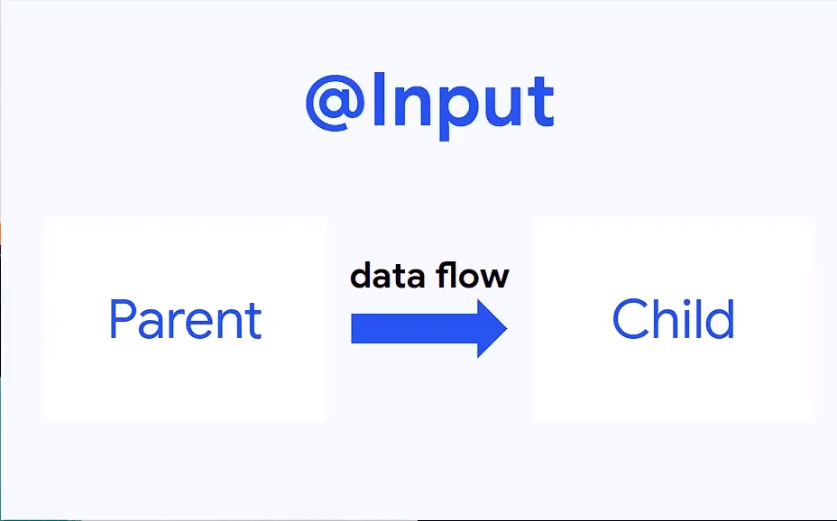
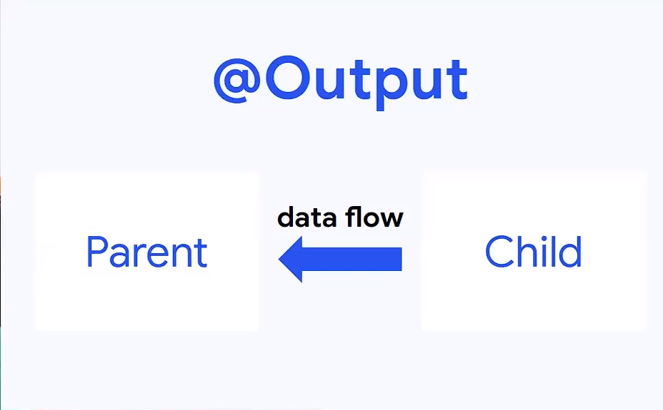
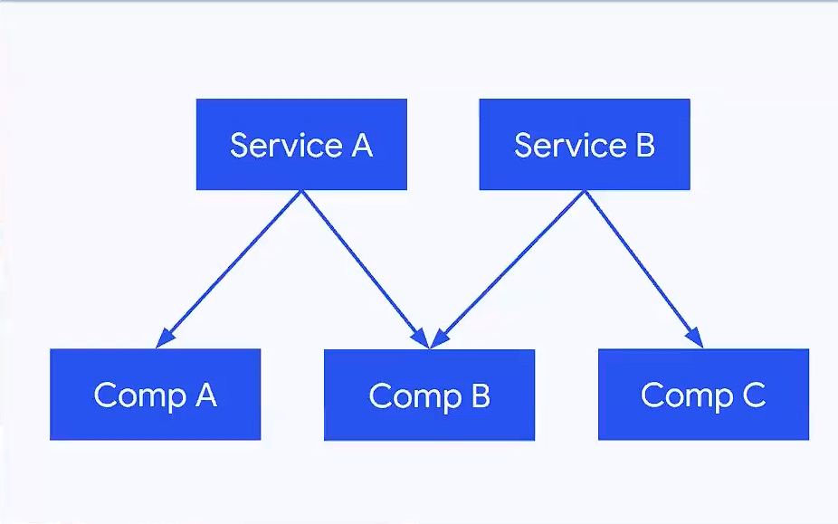
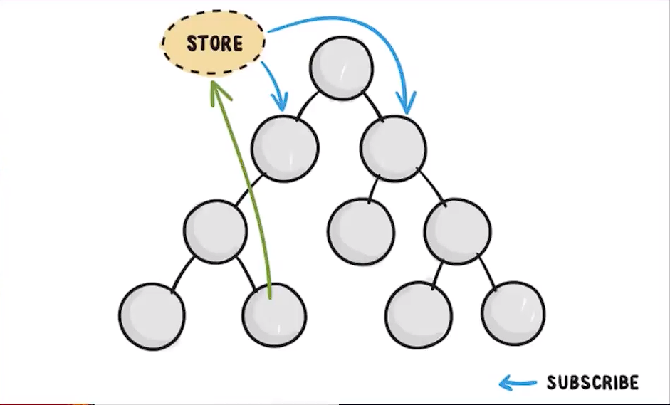

Angular

Última edición el día 2022-04-13 a las 15:36.
Table de contenidos de la pagina
Que es Angular y porque elegirlo?
Angular mas que un framework se considera toda una plataforma, con módulos y paquetes listo para utilizar en una aplicación.
Forms
PWA
Language Services
Router
Elements
CDK
Universal
Compiler
i18n
Http
Material
CLI
Angular se reconocer por tener un gran rendimiento en las aplicaciones. También podemos tener aplicaciones multiplataforma (llevándolas a electron, native script, ionic) Ademas angular tiene una gran comunidad.
Instalación
Instalar Node
Para empezar a trabajar con Angular necesitamos tener instalado Node.js para ellos podemos ir a la pagina de node. Lo mas recomendable es instalar la ultima version LTS (Long Term Support)
También si necesitamos una version particular podemos instalar una version particular utilizando el software para manejo de versiones nvm.
Luego con el siguiente comando podemos ver que version de node tenemos:
node -v
También con el siguiente comando podemos ver que version de npm (instalador de paquetes de node) tenemos:
npm -v
Instalación de angular
Para instalar el framework de angular tenemos que hacer uso del siguiente comando:
npm i -g @angular/cli
Nota
Este comando nos instala la ultima version del framework disponible. Si queremos una version en particular podemos utilizar el mismo comando agregando un @ para especificar la version. Ejemplo: npm i -g @angular/cli@12.1.2
Para verificar la version del CLI que tenemos instalada ejecutamos el siguiente comando:
ng version
Crear una aplicación
Para crear una aplicación vamos al directorio donde se va a generar la estructura de directorios de angular y usamos el siguiente comando:
ng new my-project
Nota
Especificamos que nuestra aplicación tenga routing y elegimos el preprocesador que utilicemos, el mas común es SCSS Automáticamente angular nos alista un proyecto listo para trabajar.
Luego entramos a la carpeta de nuestro proyecto y ejecutamos el siguiente comando:
ng serve -o
Nota
Este comando nos genera un servidor de desarrollo en localhost en el puerto 4200 por defecto.
La opción -o nos permite abrir el servidor de desarrollo directamente en nuestro navegador predeterminado.
La opción –port=3500 nos permite abrir el servidor de desarrollo pero en el puerto 3500.
Para matar el proceso de la terminal podemos usar el comando ctrl + c.
Si volvemos a Ejecutar el comando ng version dentro de la carpeta de nuestro proyecto obtenemos la información de que dependencia y versiones tiene nuestro proyecto
Estructura de un proyecto en Angular
Archivo/ Directorio |
Descripción |
|---|---|
src/ |
Aquí Esta el corazón de la aplicación (Componentes, html, css, routing) |
.browserslistrc |
En que versiones del navegador tiene que ser compatibles la aplicación |
.editorconfig |
Para escribir reglas de escritores de trabajo en equipo (Plugin editor config) |
tsconfig.json |
Configuración de que tiene angular con typescript. Compilación, versiones de typScript, donde transpile los archivos |
angular.json |
Se puede manejar diferentes ambientes (Staging, QA, Production) También configuraciones de compilación, tamaños de la aplicación, etc |
karma.conf.json |
Configuración para correr pruebas unitarias. |
package.json |
Aquí tenemos los scripts, las versiones que estamos manejando |
.nvm |
Este archivo deberíamos añadir para especificar la version de node que estamos utilizando |
Para mejorar la experiencia de desarrollo hay una extension para vscode y otros editores de código llamada Angular Language Service.
Conceptos básicos de typescript
TypeScript puede inferir tipos como por ejemplo:
const userName = 'Hola Mundo'
Pero con Typescript puedo asegurarme el tipado de la variable para asegurarme:
const userName: string = 'Hola Mundo'
Nota
Esto evitaría cometer errores de querer agregar a la variable userName el valor 1 por ejemplo.
El tipado puede corregir hasta el 60% de 🐛bugs que cometemos como desarrolladores.
También es posible indicar que una variable es de 2 tipos
const userName: string | number = 'Hola Mundo'
También se puede proteger a las funciones con un tipado. Lo cual nos da un feedback temprano de que tipos de valores espera la función:
const sum = (a: number, b: number) => {
return a + b
}
Ademas nos permite crear clases de una manera mas simple pasando de esto:
class Person{
age: number
lastName: string
constructor(age: number, lastName: string){
this.age = age
this.lastName = lastName
}
}
const nico = new Person(28, 'Mendoza')
A esto:
class Person{
constructor(public age: number, public lastName: string){}
}
const nico = new Person(28, 'Mendoza')
Comunicación de datos en Angular
String Interpolation
Es la forma que nosotros desde nuestra lógica escrita en TypeScript podemos pasar datos a la renderizar a nuestro template. Es la forma en que nosotros con doble llaves podemos poner una expresión dentro de ella como una función o una variable que este en TypeScript.
Por ejemplo:
export class AppComponent {
name = 'Nicolás'
age = 18
url = 'https://angular.io/assets/images/logos/angular/angular.svg'
}
Advertencia
Para poder renderizar las variables del TypeScript de nuestro componente tienen que ser de acceso publico 🔓
<h2>{{ 'Hola Mundo '.repeat(5) }}</h2>
<p> 3 + 3 = {{ 3 + 3 }} </p>
<h3>Hola soy {{ name }} y tengo {{ age }} años</h3>
<img src={{url}} alt="img">
Property Binding
Es la forma en la que podemos modificar atributos desde el controlador, y mandar a los atributos en el HTML. Por ejemplo: El tag de una imagen, el href de un link, el estado de un botón
export class AppComponent {
name = 'Nicolás'
age = 18
url = 'https://angular.io/assets/images/logos/angular/angular.svg'
btnDisabled = true
}
<button [disabled]="btnDisabled"> Enviar </button>
<input type="text" [value]="name" />
<progress max="100" [value]="age"></progress>
<img width="100" [src]="url" alt="img">
Nota
El string interpolation nos sirve mas para ingresar contenido como en párrafos, h1, h2, etc. El Property Binding son específicamente para propiedades. Es recomendable para valores que no son un string.
Event Binding
Sirve para ejecutar una función que definamos en el componente desde el template. El evento que queremos capturar esta encerrado entre paréntesis.
export class AppComponent {
btnDisabled = true
toggleButton(){
this.btnDisabled = ! this.btnDisabled
}
onScroll(event: Event){
const element = event.target as HTMLElement
console.log(element.strollTop)
}
changeName(event: Event){
const element = event.target as HTMLInputElement
this.name = element.value
}
}
.box{
height: 200px;
width: 200px;
overflow: auto;
background: red;
}
<button [disabled]="btnDisabled"> Enviar </button>
<button (click)="toggleButton()"> Toggle Button</button>
<div class="box" (scroll)="onScroll($event)">
<p>Lorem..</p>
</div>
<input type="text" [value]="name" (keyup)=changeName($event) />
<p>Nombre: {{ name }}</p>
Nota
Los eventos que son nativos del html o DOM los enviamos con $event
Data Binging
Es una fusion entre escuchar un evento con Event Binding y setear una propiedad (En angular utilizamos el NgModel)
Sirve mucho para los input, siempre esta pendiente del estado del input, si el campo es valido o no y sincroniza el valor.
También Nos permite saber si una propiedad es valida utilizando un #template
export class AppComponent {
name = 'Nicolás'
}
<p>Nombre {{ name }}</p>
<input type="text" required #nameInput="ngModel" [(ngModel)]="name" ></input>
<p>Valid: {{ nameInput.valid }}</p>
Advertencia
Para poder habilitar el NgModel tenemos que ir a app,.modules.ts, importar el modulo FormsModule y colocar lo en el array de imports.
import { FromsModules } from '@angular/forms'
@NgModule({
declarations: [
AppComponent
],
imports: [
BrowserModule,
AppRoutingModule,
FromsModules
],
providers: [],
bootstrap: [AppComponent]
})
Estructuras de control en Angular
ngIf
Tenemos la directiva ngIf la cual, si se cumple la condición booleana del contenido, se renderiza el elemento html.
<p *ngIf="name === 'Nicolas'"></p>
También se puede utilizar else en la condición:
<p *ngIf="name === 'Nicolas'; else myBlock"></p>
<ng-template #myBlock>
<p>Bloque de else</p>
</ng-template>
ngFor
La directiva ngFor la cual nos sirve para iterar un array. También nos permite utilizar el indice o posición de cada elemento del array.
export class AppComponent {
names: string[] = ['Nicolás', 'Julian', 'Santiago']
}
<ul>
<li *ngFor="let name of names; index as i">
{{ i }} {{ name }}
</li>
</ul>
<ng-template #myBlock>
<p>Bloque de else</p>
</ng-template>
Nota
No se pueden iterar objetos, solo se iteran arrays. Si queremos iterar arrays de objetos podemos definir interfaces.
ngSwitch
Esta directiva nos sirve para no tener que hacer tantas cadenas de ngIf. Se escribe como un Data Binding y cada case como una estructura de control.
<div [ngSwitch]="name">
<p *ngSwitchCase="'nicolas'">La persona es Nicolas</p>
<p *ngSwitchCase="'julian'">La person a es Julian</p>
<p *ngSwitchCase="'camilo'">La person a es Camilo</p>
<p *ngSwitchDefault>No hace match</p>
</div>
Estilos en Angular
En angular tenemos un archivo con extension .scss donde podemos poner nuestros estilos y utilizarlos en el componente que necesitemos.
.products--grid {
display: flex;
flex-direction: column;
div {
img {
width: 100%;
border-radius: 10px;
}
h2, p{
margin: 0;
}
}
}
@media screen and (min-width: 40em){
products--grid{
display: grid;
grid-template-columns: repeat(5, 1fr);
grid-gap: 15px;
}
}
<div class="products--grid">
<div *ngFor="let product of product">
<img [src]="product.image" alt="img">
<h2>{{ product.price }}</h2>
<p>{{ product.name }}</p>
</div>
</div>
Dynamic class & Styles
Para hacer estilos dinámicos necesitamos poner la Property Binding class seguida de un punto y el nombre de la clase que queremos añadir si la condición se cumple [class.nombre_clase]="condition".
.message-error {
background: red;
color: white;
opacity: 0;
transition: all linear .5s;
&.invalid {
opacity: 1:
}
}
<input type="text" required #nameInput="ngModel" [(ngModel)]="name">
<p class="message-error" [class.invalid]="nameInput.invalid" >El campo es requerido</p>
Si queremos modificar el estilo directamente de algo en particular, necesitamos poner una Property Binding style seguida de un punto y el nombre del estilo que queremos modificar seguida del valor que le queremos asignar, este puede contener una expresión ternaria [style.nombre_estilo]="valor_estilo". (Es un estilo inline)
<p [style.font-style]="nameInput.invalid ? 'italic': 'normal' ">texto texto texto</p>
Nota
Si queremos modificar los estilos de una etiqueta html antes de definir el valor de la condición por ejemplo el valor de ngModel nos va a dar un error.
NgClass & NgStyle
NgClass sirve para agrupar todos los estilos dinámicos [class] de la siguiente manera:
<hr class="line-error"
[ngClass]="{
'valid': nameInput.valid,
'invalid': nameInput.invalid
}"/>
NgStyle podemos agrupar todos los estilo en linea de la siguiente manera:
export class AppComponent {
box = {
name: 'Nicolás',
height: 100,
background: 'red'
}
}
<div [ngStyle]="{
'width.px': box.width,
'height.px': box.height,
'background-color': box.background,
'display': 'block'
}"></div>
Crear un Formulario
Para crear un formulario en Angular utilizamos la directiva ngForm. Cuando se presione el botón de enviar formulario se invocara a la función asignada al ngsubmit.
export class AppComponent {
register = {
name: '',
email: '',
password: ''
}
}
<form (ngSubmit)="onRegister()" #myForm="ngForm">
<div class="input.group">
<label for="name">Nombre</label>
<input type="text" required id="name" name="name" [(ngModel)]="register.name">
<p>Mensajes de Error</p>
</div>
<div class="input.group">
<label for="email">Email</label>
<input type="email" required id="email" name="email" [(ngModel)]="register.email">
<p>Mensajes de Error</p>
</div>
<div class="input.group">
<label for="password">Password</label>
<input type="password" required id="password" name="password" [(ngModel)]="register.password">
<p>Mensajes de Error</p>
</div>
<button [disabled]="myForm.invalid" type="submit" >Registrar</button>
</form>
Advertencia
A los botones dentro de formularios es necesario ponerles un type del tipo button para evitar que los tome del tipo submit y se envié el formulario de forma involuntaria.
Deployment con firebase
Los pasos para subir un proyecto en firebase son los siguientes
Ir a firebase.google.com
Crear una cuenta de GMail y hacer LogIn
Ir a la consola de desarrollo
Seleccionar nuevo proyecto
Colocar el nombre de nuestro proyecto
Le podemos agregar google analytics
Seguimos en continuar
Seleccionamos build Hosting y le damos empezar
Seguir los 3 pasos que nos indica Firebase
npm install -g firebase-tools
firebase -V
firebase login
firebase init
Si deseamos crear los archivos de firebase en el directorio actual
Que servicios queremos utilizar –> hosting: configure files
Queremos crear un proyecto o usar existente –> user an existing
Lista de nuestros proyectos –> el que creamos al inicio
Que carpeta queremos publicar –> ponemos public por defecto
Reescribir url para single page application –> yes
Queremos habilitar deployment con github actions –> No
Borramos el directorio public
Crea los archivos de firebase
Compilar nuestro proyecto ng build –> crea directorio dist/nombre_proyecto
Cambiamos el parámetro public del archivo firebase.json por el directorio anterior
Ultimo paso de firebase ejecutar –> firebase deploy
Listo nos devuelve la URL de nuestro proyecto
Componentes en Angular
Es la parte mas importante y el bloque principal para desarrollar en Angular. No es buena practica tener toda la lógica y la aplicación en un solo archivo. Abstraemos toda la lógica en varios componentes con responsabilidades únicas y estilos apropiados
Los componentes en Angular tienen 4 archivos :
La Vista o template html
Los estilos css, scss o less
Un archivo para hacer pruebas spec.ts
Un archivo que tienen toda la lógica y une los anteriores component.ts
El comando para crear un componente es:
ng g c nombre_componente
Nota
La g es por generate y la c por componentes
Es recomendable crear los componentes en una directorio components/
El CLI de Angular modifica el archivo
app.module.ts.
«Cada componente debe pertenecer a un modulo, y no a mas de uno.»
El archivo component.ts de un componente esta formado por varias partes.
Utiliza un decorador @Component : Que especifica a Angular como debe comportarse la clase y enlaza los archivos de template y estilos y especifica el selector
selector: manera en que vamos a utilizar el componente dentro de otros elementos
templateUrl: Archivo enlazado de la vista
styleUrls: Archivo de estilos enlazado
Los componentes usan el nombre del selector para ser llamados como tags en el HTML de otro Component.
Inputs
Es un Decorador que nos permite compartir datos entre un componente padre hacia un componente hijo.
{kind=link}
Para ello en el componente hijo importamos Input y lo colocamos como decorador @Input() en la variable de la siguiente manera:
import { Input } from '@angular/core'
@Component({
...
})
export class ejemploComponent {
@Input() variable: string = 'valor inicial'
constructor() {}
}
Para enviar el valor desde el componente padre escribimos lo siguiente
<app-ejemplo variable="Texto del padre al hijo"></app-ejemplo>
También podemos hacer esto de forma dinámica utilizando ngModel
<input type="text" [(ngModel)]="valor" />
<app-ejemplo [variable]="valor"></app-ejemplo>
Desde el .ts del componente padre:
@Component({
...
})
export class padreComponent {
valor: string = 'Texto del padre al hijo'
constructor() {}
}
Output
Es un Decorador que nos permite compartir datos entre un componente hijo hacia un componente padre.
{kind=link}
Para ello en el componente hijo importamos Output y EventEmitter (especificamos el tipo) y lo colocamos como decorador @Output() en la variable de la siguiente manera:
import { EventEmitter, Output } from '@angular/core'
@Component({
...
})
export class ejemploComponent {
@Output() variableOutput = new EventEmitter<string>()
constructor() {}
ejemploClick(
this.variableOutput.emit('valor del hijo al padre')
)
}
En el HTML del componente hijo ponemos un evento que genere la llamada de nuestra función para enviar el valor al padre
<p (click)="ejemploClick()"></p>
En el HTML del componente padre ponemos la variable como una Property Binding y una función para obtener el evento que del hijo.
<app-ejemplo (variableOutput)="onEjecute($event)"></app-ejemplo>
y por ultimo en el archivo .ts del componente padre escribimos la función que nos trae el valor del hijo.
@Component({
...
})
export class padreComponent {
constructor() {}
onEjecute(variableOutput: string){
console.log(variableOutput)
}
}
Ciclo de vida en Angular
Por cada momento del ciclo de vida de un componente en Angular, tenemos una acción y en la cual podemos correr ciertos eventos.
- Constructor:
Es el que crea la instancia del componente.
Correr antes que el render del html.
No correr cosas asíncronas aquí (peticiones a servidor, suscripción, o fetch).
Corre solo una vez.
- ngOnChanges():
Correr antes que el render del html y durante la vida del componente.
Su objetivo es actualizar los cambios en los Inputs.
Corre muchas veces (las que actualicemos los Inputs del componente).
Podemos usar un atributo del tipo
SimpleChangespara escuchar todos los Inputs.
- ngOnInit():
Correr antes de renderizar el html.
Aquí si podemos correr cosas async - fetch - llamadas API - promesas.
Corre una sola vez.
- ngAfterViewInit():
Corre después de renderizar el html.
Es para manejar los hijos del componente (sus componentes del html que ya se aparecieron en el navegador).
- ngDestroy():
Se corre cuando eliminamos el componente.
Cuando usamos un ngIf y remueve de la interfaz.
Algunos eventos siguen existiendo aun asi se elimina el componente. Hay que eliminar todos los eventos que quedan en memoria.
Importa fuentes en Angular
Vamos al archivo styles.scss y escribimos el siguiente código reemplazando el link por la url de nuestra fuente:
@import url('https://fonts.googleapis.com/css2?family=Quicksand&display=swap')
* {
font-family: 'Quicksand', sans-serif;
}
Servicios
Forma en la que angular nos permite hacer modular nuestra aplicación y apartar la lógica de negocio que no tiene que ver con la IU, si no para manipular datos, hacer servicios compartidos que puedan ser utilizados a traves de toda la aplicación por varios componentes.
Para generarlo utilizamos el siguiente comando en donde especificamos un directorio para almacenar todos nuestros servicios
ng g s services/nombre_servicio
Nota
La g es por generate y la s por service.
Es recomendable crear los componentes en una directorio servicios/.
El CLI de Angular modifica el archivo
app.module.tsy nos genera 2 un .spec.ts y un .ts.No se generan archivos de interfaz porque los servicios comunican lógica de negocio.
Dentro del archivo .ts tenemos el decorador @Injectable que le indica a Angular que el servicio se pueda inyectar en otros servicio y en otros componentes.
Lógica del servicio:
import { Injectable } from '@angular/core'
@Injectable({
provideIn: 'root'
})
export class NombreService {
serviceCounter: number = 0
constructor() {}
incrementCounter(contador) {
contador += 1
this.serviceCounter = contador
}
getContador(){
return this.serviceCounter
}
}
En el componente tenemos que inyectar nuestro servicio
import { NombreService } from '../../service/name.service'
@Component({
...
})
export class NameComponent {
contador: number = 1
constructor(
private nombreService: NombreService
) {
console.log(this.nombreService.getContador())
}
onPressButton(){
this.nombreService.incrementCounter(this.contador)
}
}
Inyección de dependencias
Angular marca con un decorador a los servicios, esto hace que se pueda inyectar en otros componentes.Tienen un domino o alcance como scope (EJ: provideIn: root) significa que es parte del modulo donde estemos trabajando.
El motor de inyección de dependencias de angular, aprovecha el tipado para cuando el componente lo llame, crea una instancia de ese servicio y lo pone a su disposición.
Podemos tener varios servicios, y también varios componentes.
{kind=link}
En este ejemplo tenemos 2 servicios y 3 componentes, donde:
El componente A y B están requiriendo el servicio A
El componente B y C están requiriendo el servicio B
Aquí podemos ver que el componente B inyecta a 2 servicios. «Un componente puede inyectar cuantos servicios requiera»
También vemos que se aplica y Angular maneja y es el patron Singleton
Patron Singleton: Si creo una instancia de algún elemento o clase (Ej: servicio A) y otro componente la requiere no crea otra instancia, si no que guarda en memoria la instancia ya creada anteriormente, y devuelve esa referencia a los demás componentes que la necesiten. Esto evita no crear instancias por cada componente que requiera el servicio.
También puede darse el caso de que un servicio puede inyectar a otro:
Servicio B ==> Servicio A
Lo que no se puede hacer es una inyección doble (Error de referencia circular):
Servicio B <==> Servicio A
Angular Http
Angular tine un modulo especial para hacer peticiones Angular Http.
Para usarlos importamos en app.modules y lo agregamos a imports.
import { HttpClientModule } from '@angular/common/http'
@NgModule({
declarations: [
AppComponent
...
],
imports: [
BrowserModule,
AppRoutingModule,
HttpClientModule
],
providers: [],
bootstrap: [AppComponent]
})
Luego en nuestro servicio donde donde vamos a hacer la implementación, hacemos la llamada al servicio HttpClient del modulo http de Angular.
import { Injectable } from '@angular/core'
import { HttpClient } from '@angular/common/http'
@Injectable({
provideIn: 'root'
})
export class NombreService {
constructor(
private http: HttpClient
) {}
getData(){
return this.http.get<Data[]>('url-api...')
}
}
En el componente tenemos que inyectar nuestro servicio y llamar a la función que nos tre los datos de la API.
import { NombreService } from '../../service/name.service'
@Component({
...
})
export class NameComponent implements OnInit{
constructor(
private nombreService: NombreService
) {}
ngOnInit(): void {
this.nombreService.getData()
.subscribe(data => { console.log(data) })
}
}
Pipes
Son tuberías, tenemos una entrada , transformación y salida . Los pipes se pueden unir, la salida de una tubería puede ser la entrada de otra.
Los pipes funcionan dentro de la vista en los strings interpolations. Angular trae incorporado una serie de pipes.
Por ejemplo si tenemos una variable de precio en decimal que queremos mostrar podemos usar el pipe currency el cual no redondea a 2 decimales y ademas nos permite indicar el nombre de la moneda que estamos utilizando.
Si tenemos una variable de tipo fecha con la fecha de hoy, podemos usar el pipe date el cual nos permite mostrar una fecha con formato especial y podríamos utilizar diferentes formatos según la documentación .
También tenemos un pipe uppercase que nos permite Poner todo un texto en mayúsculas.
<h2> {{ price | currency:'ARG' }} <h2>
<p> Today: {{ today | date:'short' }} <p>
<p> otra fecha: {{ date | date:'yyyy/dd/MM' }} <p>
<p> {{ 'hoLA MuNDo' | uppercase }} <p>
Para crear un nuevo pipe tenemos que utilizar el siguiente comando
ng g p pipes/nombre_pipe
Nota
La g es por generate y la p por service.
Es recomendable crear los pipes en una directorio pipes/.
El comando anterior nos crea 2 archivos, el .ts donde definiremos las reglas de pipe y el .spec.ts que es para las pruebas.
Dentro del directorio pipes buscamos el archivo .ts el cual tiene la siguiente estructura:
import { Pipe, PipeTransform } from '@angular/core'
@Pipe({
name: 'example'
})
export class ExamplePipe implements PipeTransform {
transform(value: unknown, ...args: unknown[]): unknown {
return null
}
}
Cambiaremos los argumentos de la función transform por lo que necesitemos por ejemplo:
import { Pipe, PipeTransform } from '@angular/core'
@Pipe({
name: 'example'
})
export class ExamplePipe implements PipeTransform {
transform(value: string): string {
return value + value
}
}
Directivas
Se utilizan para hacer modificación del DOM de forma directa, y modificar atributos. Usualmente evitamos hacer modificaciones directas del DOM porque angular ya lo hace por nosotros. Pero las directivas son otra forma de modificar el DOM con una buena practica.
Para crear la directiva utilizamos el comando:
ng g d directives/nombre_directiva
Nota
La g es por generate y la g por directive.
Es recomendable crear las directivas en una directorio directives/.
El comando anterior nos crea 2 archivos, el .ts donde definiremos la lógica de la directiva y el .spec.ts que es para las pruebas.
Dentro del directorio directives buscamos el archivo .ts el cual tiene la siguiente estructura:
import { Directive } from '@angular/core'
@Directive({
selector: '[appExample]'
})
export class ExampleDirective {
constructor () { }
}
Una directiva tiene un decorador especifico para saber su funcionalidad directa, también tiene un selector que es la forma en la cual vamos a usarla dentro de nuestro HTML.
Para poder manipular el DOM vamos a importar el servicio ElementRef, lo inyectamos en el constructor. Con nativeElement obtendremos el elemento nativo de HTML y podríamos agregarle estilo, manipularlo, etc.
import { Directive, ElementRef } from '@angular/core'
@Directive({
selector: '[appExample]'
})
export class ExampleDirective {
constructor ( private element: ElementRef) {
this.element.nativeElement.style.backgroundColor = 'red'
}
}
Para aplicar la directiva, vamos al html y lo ponemos como un atributo en el elemento
<p appExample> Texto de ejemplo </p>
También podemos escuchar eventos del elemento host (el que implementa la directiva) para realizar un comportamiento en especial. Para esto hay una directiva especial llamada @HostListener del paquete @angular/core
import { Directive, ElementRef } from '@angular/core'
@Directive({
selector: '[appExample]'
})
export class ExampleDirective {
@HostListener('mouseenter') onMouseEnter(){
this.element.nativeElement.style.backgroundColor = 'red'
}
@HostListener('mouseleave') onMouseLeave(){
this.element.nativeElement.style.backgroundColor = ''
}
constructor ( private element: ElementRef) {
}
}
Las directivas nos sirven para hacer modificaciones complejas y dinámicas al DOM, hay muchas librerías que usan directivas.
Reactividad Básica
HTML es un Árbol con sus nodos y sus hijos. Si un nodo del nivel de abajo de quiere comunicar con alguno de los otros niveles de arriba, lo que pensamos en teoría de arboles lo que tenemos que hacer es recorrer cada padre con los nodos que queremos visitar. Esto puede ser muy complejo porque al dividir la aplicación en muchos componentes tendríamos que hacer con la comunicación usando Output enviando a cada padre hasta llegar al nodo que queremos comunicar. Por esto se crearon estrategias para manipular el estado de otra forma sin tener que hacer todo el recorrido del árbol, teniendo un STORE, donde se almacenan los estados globales de la aplicación que se van a compartir. Por ejemplo: Session de usuario, carro de compras, array de productos,etc. Los componentes que quieran ese estado, se suscriben y cada vez que haya un cambio se notificara a los componentes que se suscribieron.
{kind=link}
Por ejemplo creamos un servicio donde definimos una variable como un BehaviorSubject que es la variable que vamos a transmitir (definimos valor inicial). A esa variable le creamos un suscriptor. Para transmitir utilizamos una función para cambiar el estado.
import { Injectable } from '@angular/core'
import { BehaviorSubject } from 'rxjs'
@Injectable({
provideIn: 'root'
})
export class NombreService {
private myValue = new BehaviorSubject<boolean>(false)
myValue$ = this.myValue.asObservable()
toggleValue(value: boolean){
this.myValue.next(value)
}
constructor() {}
}
Por ultimo vamos al .ts del componente donde queramos escuchar/observar el valor que necesitemos, lo importamos y
import { ExampleService } from '../../service/exampleservice.service'
@Component({
...
})
export class ejemploComponent implements OnInit {
value: boolean = false
constructor() {
private exampleService: ExampleService
}
ngOnInit(): void {
this.exampleService.myValue$.subscribe(value => {
this.value = value
})
}
}
Linters en Angular
Angular tiene un compendio de reglas de buenas practicas para escribir código (Link)
Para ejecutar un linter en angular ejecutamos el siguiente comando:
ng lint
En caso que no tengamos ningún linter configurado ejecutamos el siguiente comando que angular nos sugiere:
ng add @angular-eslint/schematics
Nota
El comando anterior funciona bien para versiones de angular 12 o superior. Para mas información ir a.
Angular consumo de APIs
Para hacer request desde una aplicación en angular tenemos que habilitar el modulo HttpClientModule.
import { HttpClientModule } from '@angular/forms'
@NgModule({
declarations: [
AppComponent
],
imports: [
BrowserModule,
AppRoutingModule,
HttpClientModule
],
providers: [],
bootstrap: [AppComponent]
})
Solicitudes GET
GET : Es un verbo HTTP que nos sirve para obtener información EJ: listado de productos, detalle de producto por un id
Dentro de un servicio, podemos hacer una solicitud GET a la url de nuestra API para traernos la información:
import { Injectable } from '@angular/core'
import { HttpClient } from '@angular/common/http'
import { TyeOfData } from '../../models/example.model'
@Injectable({
provideIn: 'root'
})
export class NombreService {
url: string = '...' //URL API
constructor(private http: HttpClient) {}
getAllData(){
return this.http.get<TyeOfData[]>(this.url)
}
}
Luego vamos al componente donde ejecutaremos el servicio que trae los datos de la API y se llama de la siguiente manera
import { ExampleService } from '...'
import { TyeOfData } from '...'
@Component({
...
})
export class exampleComponent {
data: TyeOfData
constructor(
Private exampleService: ExampleService
) {}
ngOnInt(): void{
this.exampleService.getAllData()
.suscribe(data =>{
this.data = data
})
}
}
También podemos utilizar la solicitud de tipo GET para hacer la llamada al detalle de un solo dato
import { Injectable } from '@angular/core'
import { HttpClient } from '@angular/common/http'
import { TyeOfData } from '../../models/example.model'
@Injectable({
provideIn: 'root'
})
export class NombreService {
url: string = '...' //URL API
constructor(private http: HttpClient) {}
getAllData(id: string){
return this.http.get<TyeOfData>(`${this.url}/${id}`)
}
}
Solicitudes POST
POST: Es un verbo HTTP que nos sirve para hacer creación. EJ: Crear un producto, etc.
Dentro de un servicio, podemos hacer una solicitud POST a la url de nuestra API para enviar datos para su creación.
import { Injectable } from '@angular/core'
import { HttpClient } from '@angular/common/http'
import { TyeOfData } from '../../models/example.model'
import { TyeOfDataDTO } from '../../models/example.model'
@Injectable({
provideIn: 'root'
})
export class NombreService {
url: string = '...' //URL API
constructor(private http: HttpClient) {}
create(data: TyeOfDataDTO){
return this.http.post<TyeOfData>(this.url, data)
}
}
DTO: Data transfer object, Son objetos o información de transferencia que aveces concuerda con nuestro modelo y aveces tiene menos datos
Por ejemplo si tenemos una interfaz llamada TyeOfData podemos crear otra a partir de esta otra llamada CreateTyeOfDataDTO omitiendo los valores que no deseamos y agregando nuevos valores:
export interface TyeOfData {
valor1: string;
valor2: number;
valor3: string[];
valor4: boolean;
}
export interface CreateTyeOfDataDTO extends Omit<TyeOfData, 'valor1' | 'valor4' > {
valor5: number
}
Luego vamos al componente donde ejecutaremos el servicio para crear un nuevo dato:
import { ExampleService } from '...'
import { TyeOfData } from '...'
import { CreateTyeOfDataDTO } from '...'
@Component({
...
})
export class exampleComponent {
constructor(
Private exampleService: ExampleService
) {}
createNewData(){
const dataDTO: CreateTyeOfDataDTO = {
valor2: 0,
valor3: ['...'],
valor5: 1,
}
this.exampleService.create(dataDTO)
.suscribe(data =>{
console.log(data)
})
}
}
Solicitudes PUT y PATCH
PUT y PATH : Son los verbos HTTP que nos sirven para hacer actualización de información
PUT: Pasar todos los datos aun si no se actualizan todos. PATH: Pasar solo los datos que se actualizan.
Nota
El uso de una u otra petición dependerá de que como nuestro backend arme la API
Dentro de un servicio, podemos hacer una solicitud PUT a la url de nuestra API para modificar datos:
import { Injectable } from '@angular/core'
import { HttpClient } from '@angular/common/http'
import { TyeOfData } from '../../models/example.model'
import { UpdateTyeOfDataDTO } from '../../models/example.model'
@Injectable({
provideIn: 'root'
})
export class NombreService {
url: string = '...' //URL API
constructor(private http: HttpClient) {}
update(id: string, dto: UpdateTyeOfDataDTO){
return this.http.post<TyeOfData>(`${this.url}/${id}`, dto)
}
}
Creamos un DTO para la actualización en el el cual hacemos que todos los atributos sean opcionales:
export interface TyeOfData {
valor1: string;
valor2: number;
valor3: string[];
valor4: boolean;
}
export interface UpdateTyeOfDataDTO extends Partial<TyeOfData> {}
Luego vamos al componente donde ejecutaremos el servicio para editar los datos:
import { ExampleService } from '...'
import { TyeOfData } from '...'
import { UpdateTyeOfDataDTO } from '...'
@Component({
...
})
export class exampleComponent {
constructor(
Private exampleService: ExampleService
) {}
UpdateData(id:string){
const change: UpdateTyeOfDataDTO = {
valor1: '...',
}
this.exampleService.update(id,change)
.suscribe(data =>{
console.log(data)
})
}
}
Solicitud DELETE
DELETE: Es un verbo HTTP que nos sirve para hacer eliminación de datos.
Dentro de un servicio, podemos hacer una solicitud DELETE a la url de nuestra API para eliminar datos:
import { Injectable } from '@angular/core'
import { HttpClient } from '@angular/common/http'
@Injectable({
provideIn: 'root'
})
export class NombreService {
url: string = '...' //URL API
constructor(private http: HttpClient) {}
delete(id: string){
return this.http.delete<boolean>(`${this.url}/${id}`)
}
}
Y tan solo nos quedaría implementarlo en el componente donde queremos llamarlo.
import { ExampleService } from '...'
@Component({
...
})
export class exampleComponent {
constructor(
Private exampleService: ExampleService
) {}
UpdateData(id:string){
this.exampleService.delete(id)
.suscribe(data =>{
console.log(data)
})
}
}
URL Parameters
En la url de los endpoint se pueden crear parámetros se pueden hacer varias cosas con ellos como por ejemplo filtros.
myapi.com/products&page=1 myapi.com/products&price=100 myapi.com/products&price_min=100?price_max=300
Esto puede utilizarse para hacer paginación, cada pagina devuelve cierta cantidad de productos. Esto nos permite hacer implementaciones de scroll infinitos.
Podemos implementar esto en una función separa o podemos pasar los valores limit y offset a nuestro get normal como parámetros opcionales.
import { Injectable } from '@angular/core'
import { HttpClient, HttpParams } from '@angular/common/http'
import { TyeOfData } from '../../models/example.model'
@Injectable({
provideIn: 'root'
})
export class NombreService {
url: string = '...' //URL API
constructor(private http: HttpClient) {}
getDataByPage(limit: number, offset:number){
return this.http.get<TyeOfData>(`${this.url}`, {
params: { limit, offset }
})
}
// Función mas dinámica
getAllData(limit?: number, offset?:number){
let params = new HttpParams()
if (limit && offset){
params = params.set('limit', limit)
params = params.set('offset', offset)
}
return this.http.get<TyeOfData>(`${this.url}`, { params })
}
}
Nota
Donde limit es la cantidad de datos que quiero mostrar y offset es a partir de que dato quiero mostrar.
Para implementar solo quedaría ir a nuestro componente y llamar a cualquiera de las 2 funciones.
Observables vs Promise
Uno de los beneficios de los Observables es que puedo emitir varios valores. (Angular lo utiliza en formularios reactivos, en peticiones, eventos dinámicos). Mientras que con las Promesas solo podemos emitir un valor y si queremos emitir mas necesitamos hacer otra promesa.
Los Observables nos permite hacer trasformación y cancelarlos. Mientras que las Promesas una vez enviada no las podemos cancelar.
Con lso Observables podemos usar pipes que nos permiten hacerle filtros.
Reintentar una petición
Nos Sirve para reintentar una petición, haciendo uso de observables, un cierto numero de veces debido a algún fallo que pueda ocurrir al momento de su llamada.
import { Injectable } from '@angular/core'
import { HttpClient, HttpParams } from '@angular/common/http'
import { TyeOfData } from '../../models/example.model'
import { retry } from 'rxjs/operators';
@Injectable({
provideIn: 'root'
})
export class NombreService {
url: string = '...' //URL API
constructor(private http: HttpClient) {}
getAllData(limit?: number, offset?:number){
let params = new HttpParams()
if (limit && offset){
params = params.set('limit', limit)
params = params.set('offset', offset)
}
return this.http.get<TyeOfData>(`${this.url}`, { params })
.pipe( retry(3))
}
}
Nota
Si utilizamos retryWhen nos permite reintentar mientras se cumpla una condición.
El problema de CORS
Cross origin resource sharing es «Permitir que podamos hacer peticiones desde varios dominios o dominios cruzados».
Este problema se da por el origen de la petición
Si nuestro backend tiene el mismo origen que donde hago la petición, no tendremos problemas. Porque el backend tiene esta protección pro defecto, de solo aceptar peticiones si son de su mismo origen:
api.mydomain.com –> api.mydomain.com
Si hacemos la petición desde un origen diferente, aquí nos va a dar el error de CORS porque no se soporta peticiones de orígenes diferentes.
mydomain.com –> api.mydomain.com
También nos puede pasar en local por ejemplo:
localhost:3000 –> localhost:3000
Advertencia
Cuando usamos insomnia o Postman para hacer la solicitud, estas aplicaciones cambian el origen y lo ponen al mismo dominio para evitar CORS
Solución
Que el Backend habilite los CORS, configurar reglas de seguridad por ejemplo
Cualquier dominio [*] (API publicas)
De un Listado de dominios permitidos [mydoamin.com, app.mydomain.com]
También un listado de dominios locales (Para desarrollo) […, localhost:4200]
También se puede crear un proxy desde angular, hace algo similar que insomnia o Postman (solo soluciona desde desarrollo).
En la raíz creamos un archivo
proxy.config.jsoncon el siguiente contenido:{ "/api/*": { "tarjet": "https://young-sands-07814.herokuapp.com", "secure": true, "logLevel": "debug", "changeOrigin": true, } }
Esto especifica que cualquier petición que venga de
"/api/*"aplique las reglas:target: Cual es el intercambio (IP de ejemplo)
secure: si es un dominio seguro (tiene https)
logLevel: habilitamos el log para el debug
changeOrigin: para indicar que cambie el origen
Luego vamos a nuestro servicio para cambiar nuestro string de conexión a por ej: /api/products
Podemos crear un nuevo script dentro del archivo
package.jsonpara poder correr el comando:ng serve --proxy-config ./proxy.config.jsonEste comando levanta el servidor con la configuración del proxy y no tener problemas de CORS
Manejo de ambientes
Dentro de nuestro proyecto encontramos el directorio environments/ el cual tiene 2 archivos. Angular nos brinda por defecto 2 ambientes el de Producción y Desarrollo:
environment.prod.ts
environment.ts
Por ejemplo podemos definir en environment.prod.ts (PRODUCCIÓN) lo siguiente:
export const enviroment = {
production: true,
API_URL: 'DOMINIO_API_PROD',
}
Y en nuestro environment.ts (DESARROLLO):
export const enviroment = {
production: false,
API_URL: 'DOMINIO_API_DESARROLLO',
}
Y luego en nuestro servicio hacemos las importaciones y llamamos a las variables API_URL y las reemplazamos en nuestro string de conexión.
Para correr nuestra aplicación localmente utilizando el environment en producción por ejemplo podemos utilizar:
ng serve -c production -o
En caso que queramos colocar otro entorno lo creamos dentro del directorio environment.prod.ts, el mismo tiene que tener el nombre la siguiente forma:
environment.example.ts
En este caso el entorno se llama example.
Luego hay que ir al archivo angular.json y dentro de projects/architect/build/configurations agregar la siguientes lineas:
"example": {
"fileReplacements": [
{
"replace": "src/environments/environment.ts",
"with": "src/environments/environment.example.ts"
}
],
"optimization": true,
"sourceMap": false,
"namedChunks": false,
"extractLicenses": true,
"vendorChunk": false,
"buildOptimizer": true,
"budgets": [
{
"type": "initial",
"maximumWarning": "2mb",
"maximumError": "5mb"
},
{
"type": "anyComponentStyle",
"maximumWarning": "6kb",
"maximumError": "10kb"
}
]
}
y en el mismo archivo dentro de projects/architect/serve/configurations agregamos las siguientes lineas:
"example": {
"browserTarget": "project-name-example:build:example"
}
y utilizando el siguiente comando podemos correr el entorno de forma local utilizando el entorno configurado anteriormente
ng serve -c example -o